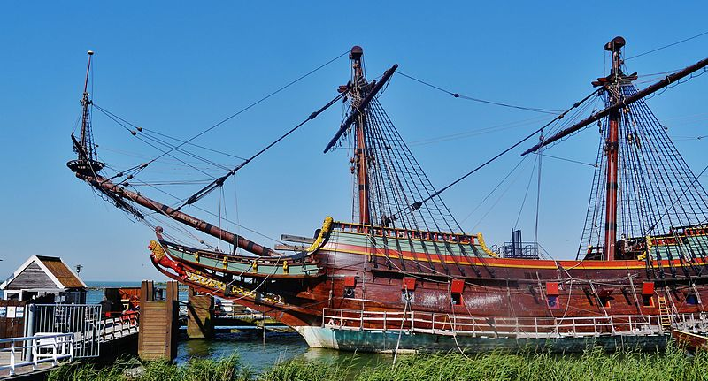

Batavialand
 Hoe bouwde je 400 jaar geleden een houten zeilschip? Ga aan boord van het spectaculaire VOC-schip de Batavia, duik in de geschiedenis van Flevoland en beleef de verhalen van de pioniers in Batavialand. De werf Stap in de wereld van pionier Willem Vos en zie hoe zijn droom om een VOC-schip te bouwen werkelijkheid is geworden. Kijk mee en leer hoe 400 jaar geleden een groot houten schip werd gemaakt. Maak kennis met oude ambachten en ga zelf aan de slag met touwslaan, spijkerslaan, steltlopen, hoepelen, ringwerpen of kopje hakken. Laat je meenemen naar de 17e eeuw met mooie, spannende en grappige verhalen van de gidsen. Het museum In het museum vertelt pionier Cornelis Lely je meer over het polderverhaal. Loop langs de Flevowand en leer over de geschiedenis van het leven met de Zuiderzee van de IJstijd tot nu. In Het land van Michelle reis je mee naar de prehistorie. Bekijk de film waarin je ziet hoe het landschap van Flevoland er 7.000 jaar geleden uitzag. Stroop je mouwen op en vaar met een Koggeschip of kruip in de huid van een ingenieur in het Watertheater en maak zelf een polder.